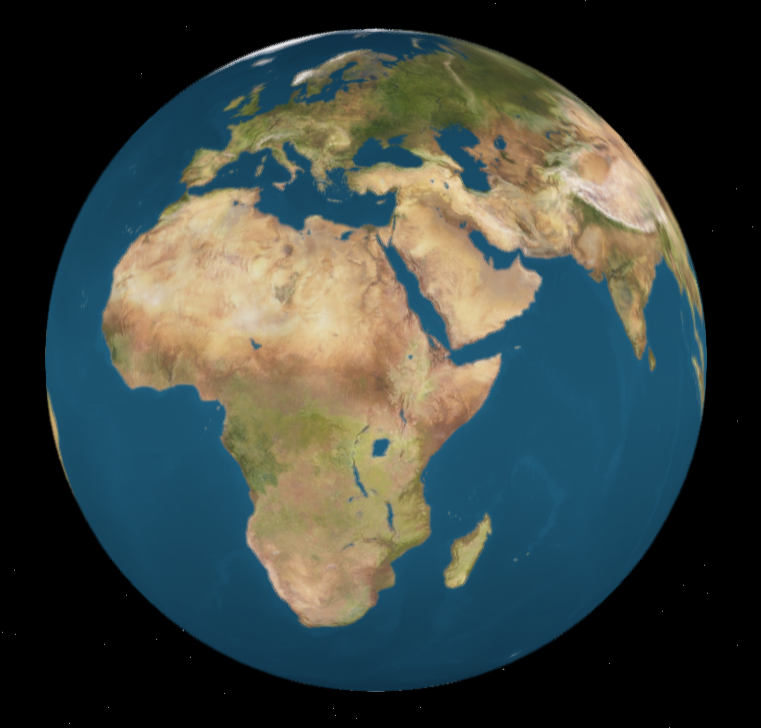
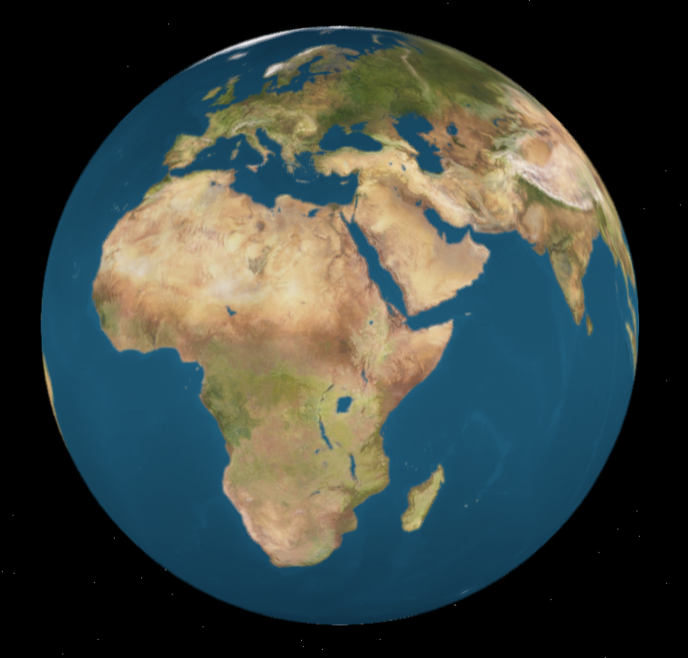

Asteroid : Introducing Alpha v0.1
Votre objectif sera de passer de niveau en niveau tout en affrontant divers types d'ennemis au travers
de niveaux uniques. Le joueur sera équipé d'un missile laser ainsi que d'un canon à plasma
et aura la possibilité de ramasser des bonus qui apparaîtront dans le niveau.
Asteroid propose trois vues de camera dont une caméra 3eme personne qui réagit en temps réel aux commandes de l'utilisateur.
Pour certaine taille d'écran le fov n'est pas adapté, il suffit juste de le réajuster via la molette.
Note: N'oubliez pas d'activer la musique pour le dernier niveau.


 
